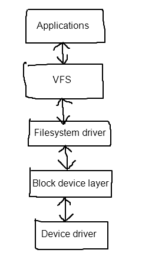
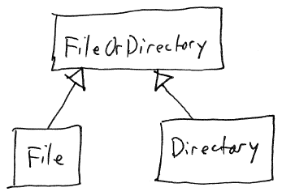
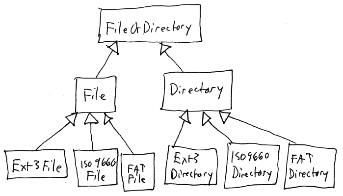
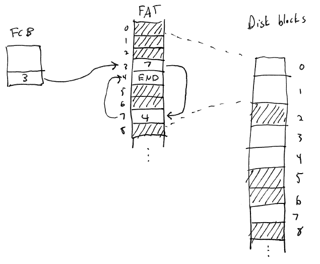

Generally, the data of the files and directories in a filesystem are
stored on a block device.
A block device is an I/O device connected to the computer that
organizes its storage as a sequence of fixed-size blocks of data. Each block is
addressable by its sequence number, or block number. Each block
contains a number of bytes equal to the block size, which is always a power
of 2.
Disk drives are block devices. For magnetic hard disks, the
block size is usually 512 bytes. For optical disks (such as
CD-ROM and DVD-ROM drives), the block size is usually 2048 bytes.
The OS kernel's task is to organize a region of a block device as a
filesystem by mapping the file and directory data onto blocks.
Filesystems are generally implemented using a layered approach:

Applications are the user
processes that are using read/write or memory mapped file I/O to access
and modify file data.
The VFS, or virtual filesystem layer, is
responsible for providing a consistent interface for multiple
filesystem drivers.
A filesystem driver is an
implementation of filesystem operations for a particular on-disk
filesystem format. There are many filesystem formats commonly
used:
NTFS: The Windows NT (and XP, Vista,
etc.) filesystem.
FAT: Originally the DOS filesystem, now
also supported by Windows.
ext3: The most common Linux filesystem.
ISO 9660: A filesystem for CD-ROM and
DVD-ROM.
The block device layer
provides a high-level interface for the different kinds of block I/O
devices that the OS kernel supports. Examples of block devices
include hard disks, optical drives, flash media, etc.
Device drivers provide support for a particular type of disk
controller. A device driver may support only a single kind of
device, or may support a family of hardware devices that support a
common programming model.
Examples of hardware device types are
ATA:
the most common hard disk and optical disk technology for PCs.
Includes serial ATA (SATA) and parallel ATA (PATA). ATA is a
complex technology, and there are a very large number of hardware
chipsets supporting ATA devices. ATA drivers are often
implemented using multiple layers: a generic (high-level) ATA level,
and low-level chipset drivers
supporting a particular ATA chipset.
SCSI:
this used to be the standard for high-performance disk I/O devices, but
has now been largely superceded by ATA. (In fact, SATA is
essentially SCSI right down to the format of commands used to
communicate between the disk controller and disk devices.)
USB:
commonly used to attach flash media, but can also be used as a way of
attaching traditional hard disks and optical drives. USB mass
storage devices are controlled using the SCSI protocol with USB as the
transport layer.
Although files and directories are used differently by applications,
they are really quite similar internally.
A file is just a collection of bytes. The OS kernel allows
user processes to read and write the data stored in the file
directly. The OS kernel does not interpret the contents of files in
any way: that is up to the application.
A directory is a collection of directory
entries: each directory entry is a reference to a file or
subdirectory. A directory entry needs to store the following
information:
The name of the file
Where the file's data is located on the
storage medium
A directory entry may also contain metadata describing other
information about the file or directory, such as its size, which users
are allowed to access it, etc.
When we view a directory as a collection of directory entries, we
can see that a filesystem implementation can use the same internal
mechanisms to manage both files and directories. A directory is
simply a file where
User processes are not allowed to
directly read and write the contents of the file. Instead, they
use special system calls to work with directories, such as a system
call that reads a directory entry from an open directory.
The OS kernel interprets the file data as
a sequence of directory entries
In all other important respects, a directory is a file.
When files and directories are used by the operating system, the OS
kernel uses a data structure to represent each file and
directory. We will follow the Unix/Linux model and consider
directories to be a special kind of file.
The PCB of each process has a file table: a data structure (often an
array)
containing pointers to all of the file objects that the process has
opened. Within user processes, they refer to the entries in this
table using file handles. Assuming that the open file table is an
array, a file handle is simply an index into the array.
(Unix/Linux refer to file handles as file
descriptors.)
Note that if multiple processes have the same file open, their open
file tables contain pointers to the same file object.
We have already mentioned that files and directories are closely
related. In object-oriented terms, we can view them as subclasses
of a common base class:

Now consider an operating system that supports multiple filesystem
formats. For example, Linux supports ext3, iso9660, and
vfat. So, conceptually, we can envision concrete subclasses of
File and Directory for each filesystem format:

[Note: the actual implementation of files and directories in Linux
is somewhat different, but is very similar in spirit.]
Many operating systems used this basic object-oriented model in
order to support multiple filesystem types. This approach is
known as a virtual filesystem
model.
VFS Objects and Operations
As seen above, File and Directory are two classes of VFS
objects. They may be usefully defined as subclasses of an
abstract base class FileOrDirectory. (Unix takes this general
approach, because files and directories are both referred to using file
descriptors, and the open file table in each PCB contains pointers to
objects which may be either files or directories.)
Another kind of VFS object is a Mount, which corresponds to a
filesystem mounted in the overall filesystem namespace.
Yet another kind of VFS object is a FilesystemDriver, which
corresponds to an OS driver for a particular filesystem format (e.g.,
EXT3, VFAT, NTFS, etc.)
Typical VFS operations are divided into operations supported by
files/directories and operations supported by mounts.
File/Directory operations
read
- read some data from a file into a user buffer (files only)
write
- write some data into a file from a user buffer (files only)
seek
- move the current file pointer (files only)
truncate
- reset the size of the file to 0 (files only)
get_next_dir_entry
- get the next directory entry (directories only)
close
- called to release a process's handle on the file or directory
pagein,
pageout - paging routines
allowing the file to be mapped into a virtual address space (files only)
Mount operations. Mainly these are concerned with creating,
opening, and deleting files and directories.
create
- create a new empty file in the filesystem. Returns a File
object.
open
- open an existing file in the filesystem (possibly creating a new one
if the named file doesn't exist). Returns a File object.
create_dir
- create a new empty directory in the filesystem. Returns a
Directory object.
delete
- delete a file or directory in the filesystem.
FilesystemDriver operations.
format
- initialize the on-disk filesystem data structures on a particular
block device or partition
mount
- mount a filesystem in the global filesystem namespace
Each file or directory will need a file
control block to store metainformation about the file or
directory.
Information stored in the FCB:
Where the storage blocks for the file or
directory are located.
Who owns the file/directory.
The file permissions.
Who is allowed to access the file: an
access control list.
One of the main tasks of a
filesystem implementation is to manage the storage space on a block
device. Each logical file and directory in the filesystem uses
particular disk blocks for its data storage.
Allocation algorithms:
Contiguous allocation. Storage
for files and directories is allocated by finding a contiguous sequence
of blocks on the block device of sufficient size. Problems with
this approach: internal and external fragmentation. Also, if a
file needs to grow, but another file has been allocated after it, then
the filesystem must find a new (larger) contiguous region. If
none exists, then the file can grow unless we go through and defragment
the filesystem.
Linked Allocation. Each disk
block allocated to a file or directory contains a "pointer" (block
number) of the next storage block. Advantages: we now have no
external fragmentation whatsoever. Internal fragmentation is
minimal. Disadvantages: we have to store the pointer in each
block. That means that the storage blocks contain both data and
meta-information. That makes it more difficult to allow OS
buffers containing file data to be mapped into virtual memory.
Also, depending on how the data blocks are allocated, we may have to do
a lot of disk seeks in order to go through a large file.
A
special case of linked allocation is the File Allocation Table (FAT), commonly-used by DOS and
(until recently) Windows. Each filesystem contains a file
allocation table. The FAT is an array, where each entry in the
array corresponds to a block number. Initially, each entry in the
FAT is marked with a special "available" block number. To
allocate a block, the filesystem just looks for an FAT entry marked as
available. The sequence of blocks used by a file is represented by
storing the index of the next block in the sequence in each FAT
entry. The entire chain is terminated with a special "last block"
marker.

Indexed allocation. Index
blocks are used to keep track of which storage blocks have been
allocated to a file. An index block is simply an array of block
numbers specifying which blocks have been allocated to a particular
file or directory. When a new block is added to the end of a
file, we just have to fill in the block number of the allocated block
in one of the slots in the index block.
[Indexed allocation - next
lecture.]